Sin cuenta ni registro
Instalas Nexo y lo usas. No te pide correo ni contraseña.
Para Windows y Linux · Nexo
Nexo junta tu horario, tu calendario, tus tareas y tus documentos en una sola aplicación para Windows y Linux. No necesitas cuenta, y lo esencial funciona aunque no tengas internet.
En Linux: el .deb o el AppImage, de la misma versión.
Al abrir Nexo, en Inicio ves tu día. Una sola tarjeta te dice qué sigue, qué tienes que entregar y qué te falta por hacer, para que no tengas que revisar tres lugares distintos.
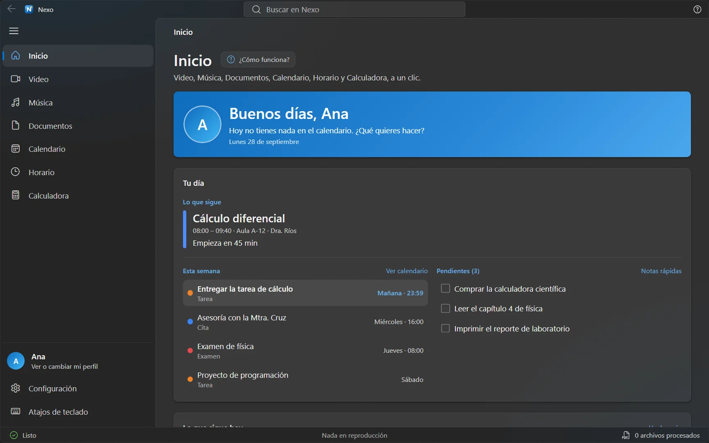
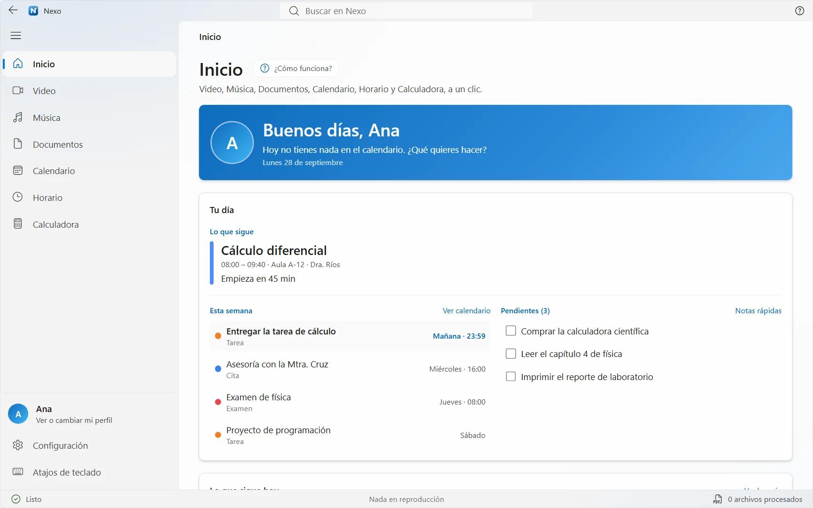
1 2 3Lo que haces cada día
Toma una foto o una captura del horario que te dieron y Nexo lo lee: saca las materias, los días y las horas. Antes de cada clase te avisa.
Anota tareas, exámenes, citas y cumpleaños, cada uno con su color. Nexo te avisa unos minutos antes de un examen con hora, y puedes exportarlo todo a .ics.
Nexo crea una carpeta por cada materia de tu horario, dentro de Documentos\Nexo\Tareas. Ahí mismo puedes crear un Word, un Excel, un PowerPoint o un texto en blanco.
Une, divide, comprime y convierte PDF y archivos de Office, ponles contraseña o quítala, y saca el texto de una imagen (OCR). Todo se hace en tu computadora: no se sube nada.
Una sola caja para encontrar secciones, eventos, clases y canales, y también palabras dentro de tus PDF, Word, Excel y PowerPoint.
Reúne los videos nuevos de los canales que sigues en un solo lugar. No necesitas cuenta de YouTube.
Tus favoritos, recientes y listas, con un reproductor grande y controles en la bandeja del sistema. Para reproducir dentro de Nexo, Spotify pide una cuenta Premium.
Estándar y científica, con historial. También se maneja con el teclado.
Los avisos salen con el nombre y el icono de Nexo. Elige entre cinco sonidos propios o los de Windows, y silencia los avisos en las horas que quieras.
Tema claro u oscuro, el color que prefieras, el tamaño de la interfaz y horas de 12 o de 24. Es una herramienta de todos los días: que se sienta cómoda.
Guarda todos tus datos en un solo archivo y llévalos a otra computadora cuando cambies de equipo.
Nexo revisa por su cuenta si hay una versión nueva y te ofrece «Actualizar ahora». Tus datos se conservan.
Además, con «Iniciar con Windows» Nexo arranca oculto en la bandeja y sigue avisándote. Cada sección se explica la primera vez que entras, y después de actualizar te cuenta qué cambió.
Recorrido
Así se ve cada pantalla. Los nombres, clases y eventos de estas capturas son inventados.
Abre la aplicación real en tu navegador, con datos de ejemplo. Sin instalar nada. Algunas cosas, como los avisos del sistema, las carpetas de tus materias y la búsqueda dentro de tus archivos, solo existen en la aplicación para Windows.
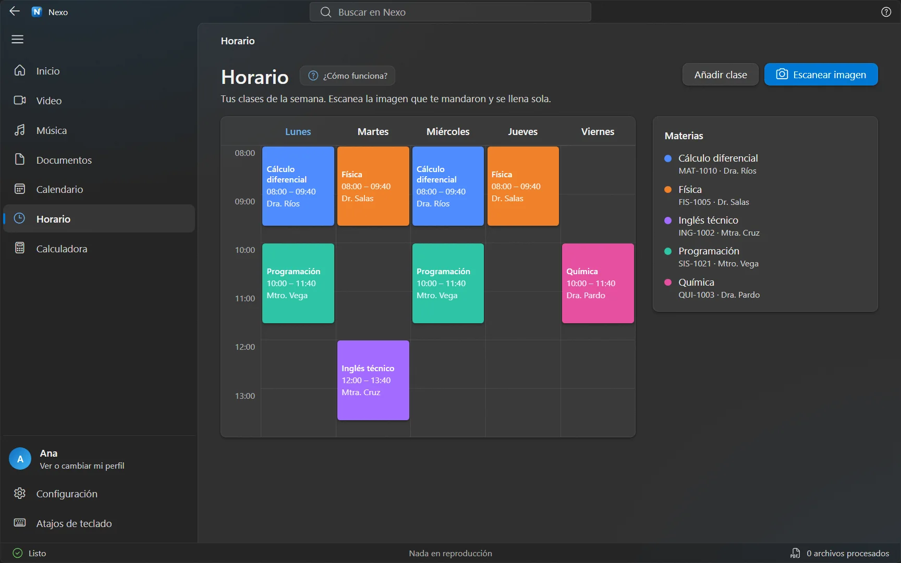
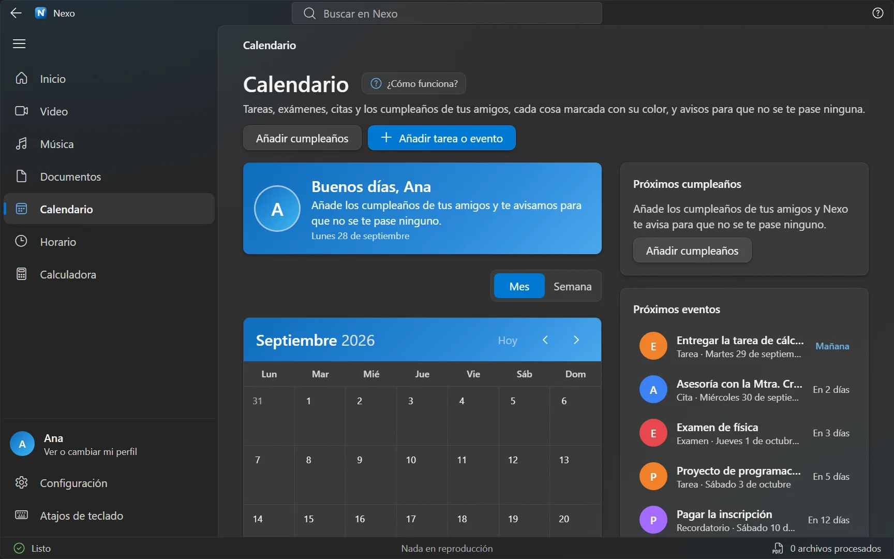
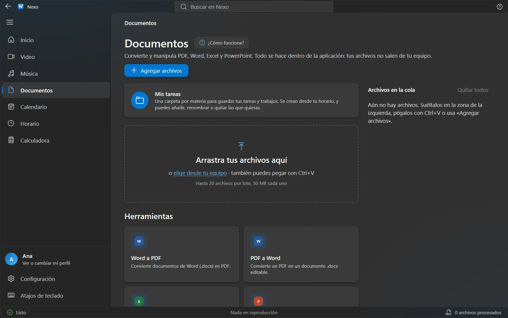
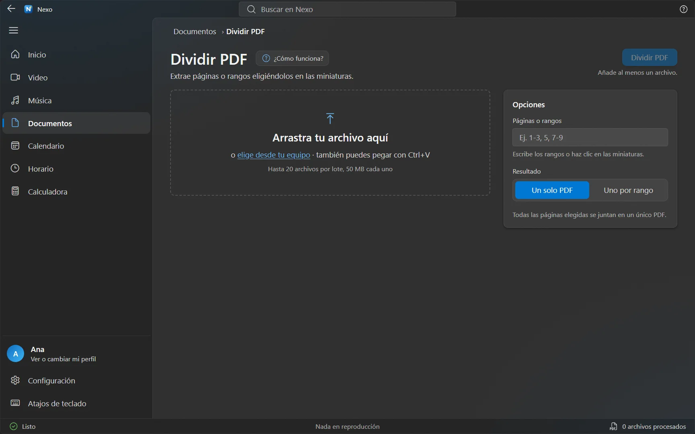
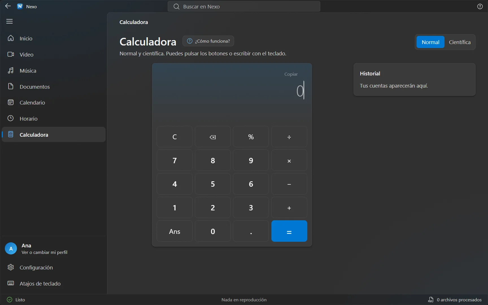
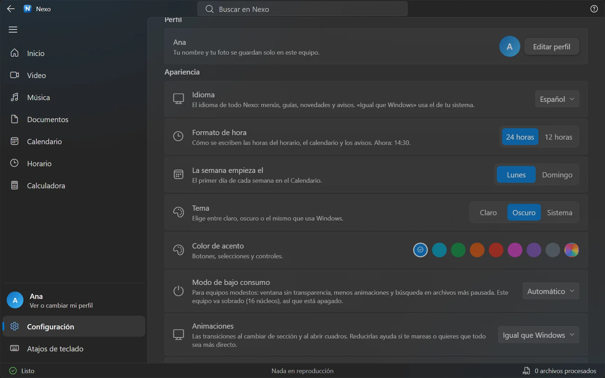
Buscador global
Cuando no recuerdas dónde dejaste algo, escribe lo que sí recuerdas. Nexo busca en todo a la vez: secciones, herramientas, eventos, clases, notas y canales, y también dentro de tus archivos.
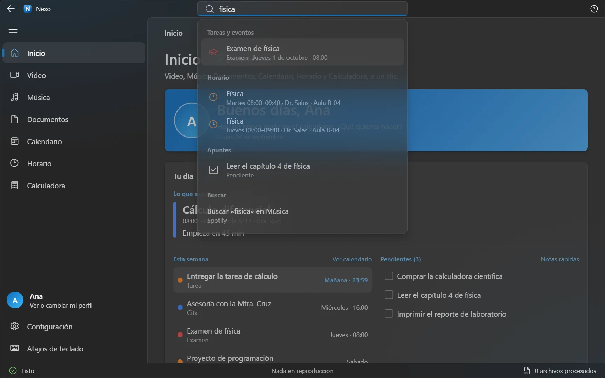
Documentos
Nada se sube a ningún sitio: los archivos se procesan en tu computadora. Si tienes Microsoft Office instalado, Nexo lo usa para que el resultado salga idéntico al de Office.
Ni tu horario, ni tus archivos, ni tu calendario. Nunca.
Hazlo tuyo
Pruébalo: elige un color y esta página lo adopta, igual que la aplicación. También puedes cambiar entre tema claro y oscuro, y entre español e inglés.
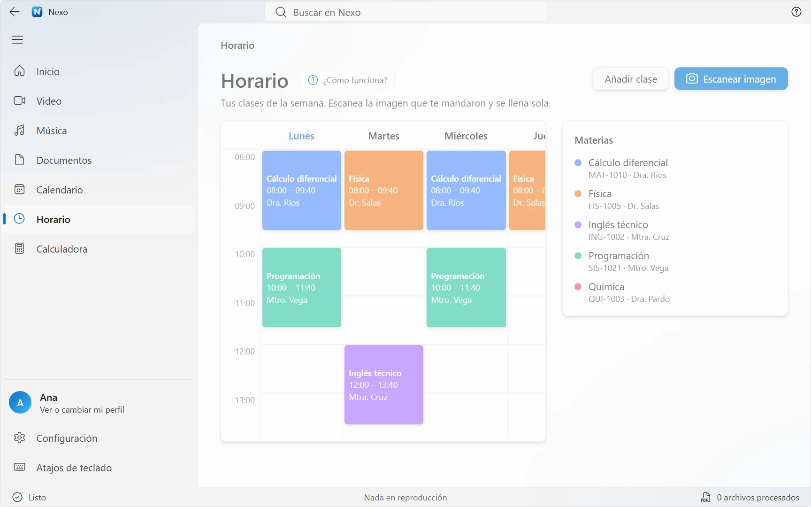
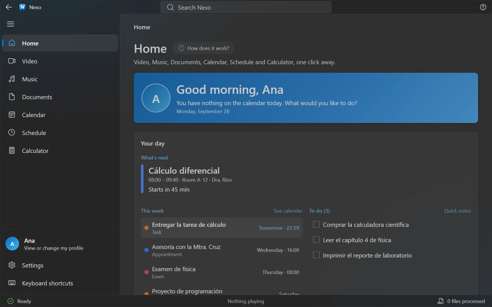
Y más: tamaño de la interfaz, horas de 12 o de 24, semana que empieza en lunes o en domingo, menos animaciones y secciones de la barra lateral que puedes esconder.
Privacidad
Instalas Nexo y lo usas. No te pide correo ni contraseña.
Tu horario, tu calendario, tus notas y tus ajustes se guardan en tu equipo, con una copia automática. Tus carpetas de materias están en Documentos\Nexo\Tareas. Nada de eso se sube a internet.
Cada actualización viene firmada y Nexo la verifica antes de instalarla. Guarda tus datos antes de instalar y, si la descarga falla, vuelve a intentarlo.
El código está en GitHub: cualquiera puede revisar qué hace Nexo. Video y Música usan YouTube y Spotify, así que esas dos secciones sí necesitan internet.
No todos estudian con una laptop potente. Si la tuya es sencilla, Nexo lo nota y trabaja con menos recursos para que no se sienta lenta.
Historial de versiones
Nexo se sigue mejorando. Esto es lo que llegó en cada versión, explicado como se lo contaríamos a quien la usa.
Empezar
Baja el instalador Nexo_…_x64-setup.exe de la última versión en GitHub.
Ábrelo y sigue el asistente. No pide permisos de administrador.
Al abrir Nexo, en Inicio verás una lista corta que se marca sola: poner tu nombre, cargar tu horario, crear las carpetas de tus materias, agregar un examen y probar Ctrl + K.
En Linux, el paso 1 es un .deb o un .AppImage en su lugar: sudo apt install ./Nexo_…_amd64.deb, o dale permiso de ejecución al AppImage y ábrelo. Los pasos 2 y 3 son iguales.
Apoya el proyecto
Nexo es gratis por ahora y es un proyecto independiente. Si te sirve, hay varias formas de ayudar, y no todas cuestan dinero.
Todavía no hay una cuenta de donaciones. Cuando exista, aparecerá aquí con el detalle de en qué se usa cada aporte.
Para que Windows no muestre el aviso de SmartScreen al instalar Nexo. Requiere un certificado de firma, que tiene un costo anual.
Para instalarla con un clic desde la tienda de Windows o desde la línea de comandos, y que las actualizaciones lleguen solas.
Más horas para corregir, responder reportes y añadir lo que pidan los estudiantes.
Para llevar tu horario, tus avisos y tus notas en el teléfono. Es el paso más grande y todavía está en el plan.
Preguntas frecuentes
Por el momento Nexo es gratis: no hay nada que comprar ni cuenta que crear. Lo único de pago es Spotify Premium, si quieres reproducir música dentro de Nexo, y eso lo cobra Spotify.
En Linux sí: hay un .deb y un AppImage, de la misma versión que Windows. En Mac o celular, por ahora no. En Linux la música no se reproduce dentro de Nexo (Spotify solo da su protección de contenido a navegadores Chromium) y la conversión de documentos usa LibreOffice en vez de Microsoft Office.
Puede pasar con las aplicaciones nuevas que todavía ha descargado poca gente (Windows SmartScreen). No significa que algo esté mal: pulsa «Más información» y después «Ejecutar de todos modos». El instalador es el que está publicado en la página de Nexo en GitHub.
No necesitas cuenta. El horario, el calendario, las notas, la calculadora y las herramientas de documentos funcionan sin internet. Video y Música sí lo necesitan, porque usan YouTube y Spotify.
Para reproducir dentro de Nexo, Spotify pide cuenta Premium. Además Spotify limita las apps nuevas a cuentas que su autor autoriza a mano; si la tuya no está, pídeselo a quien te pasó Nexo. El resto de Nexo funciona normal sin Spotify.
Nexo avisa mientras esté abierto, aunque sea en la bandeja (activa «Seguir sonando en la bandeja» en Configuración). Revisa también que no esté activo el Asistente de concentración de Windows ni el «No molestar» de Nexo. Puedes probarlo con «Enviar aviso de prueba».
En tu computadora. Ajustes, horario y calendario están en los datos de la aplicación, con una copia automática; tus carpetas de materias, en Documentos\Nexo\Tareas.
Configuración › Copia de seguridad › Guardar copia. En la otra, instala Nexo y usa «Restaurar desde una copia». La copia no incluye tu sesión de Spotify.
Nexo revisa al abrir y te muestra un botón «Actualizar ahora»; tus datos se conservan. Para desinstalar: Configuración de Windows › Aplicaciones › Nexo › Desinstalar. Tus carpetas de Documentos\Nexo\Tareas no se borran.
Instálala en un minuto y deja que Nexo llene tu horario a partir de una foto. Si algo no funciona como esperas, cuéntanoslo en GitHub.
En Linux: el .deb o el AppImage, de la misma versión.